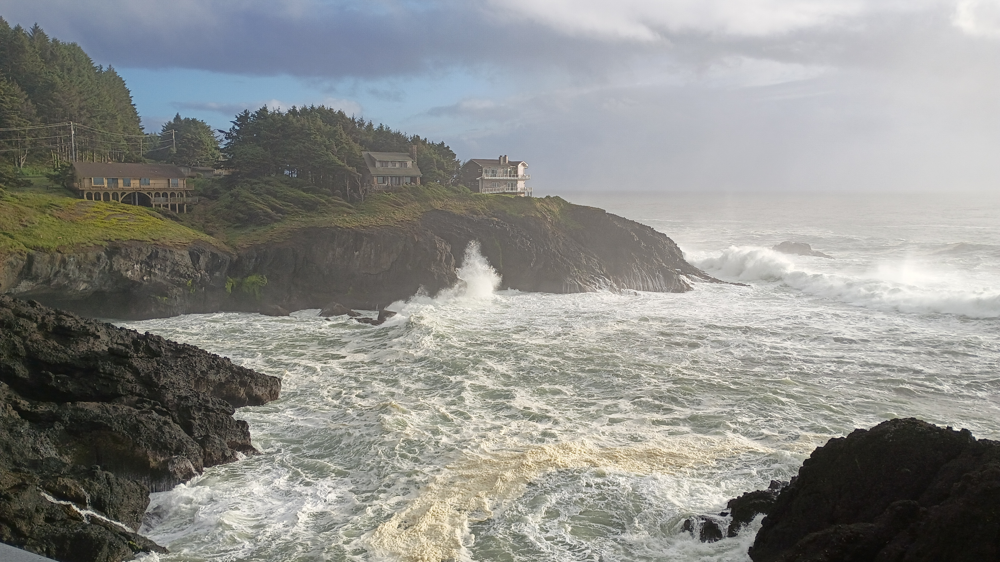
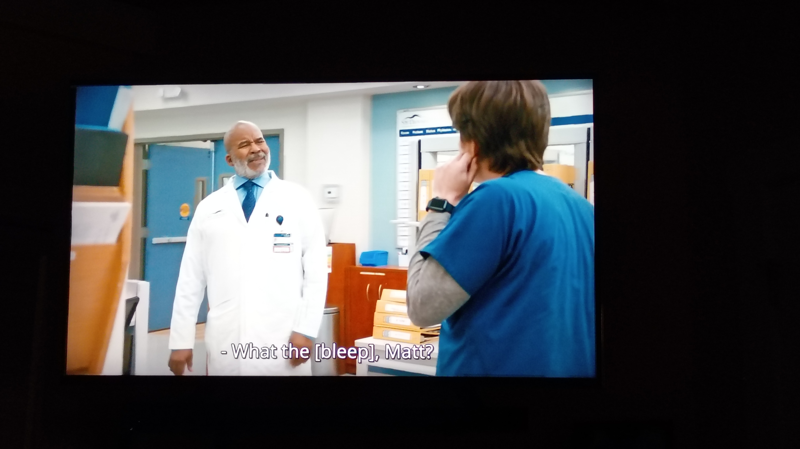
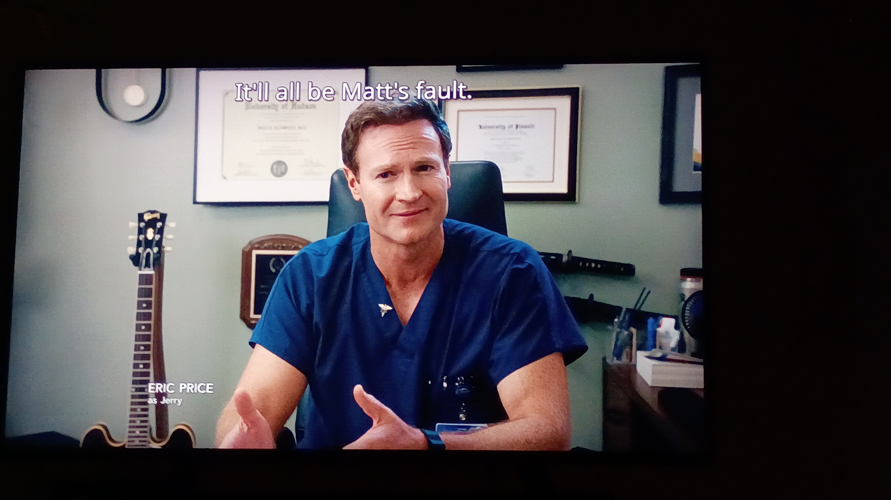
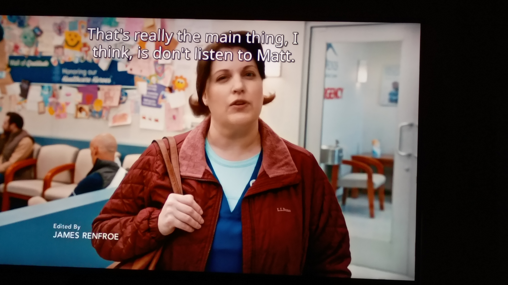
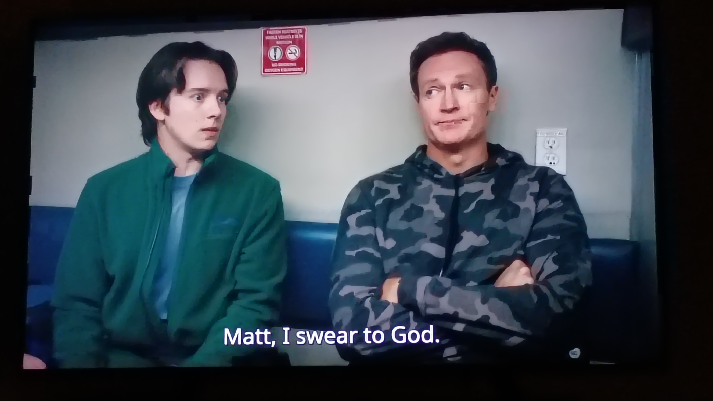
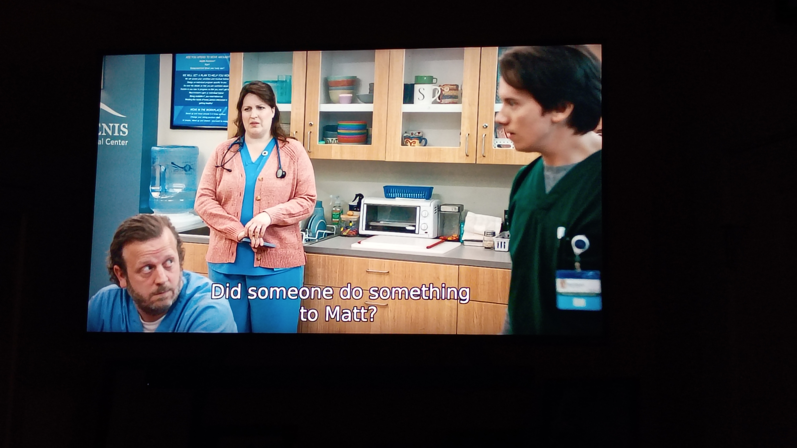
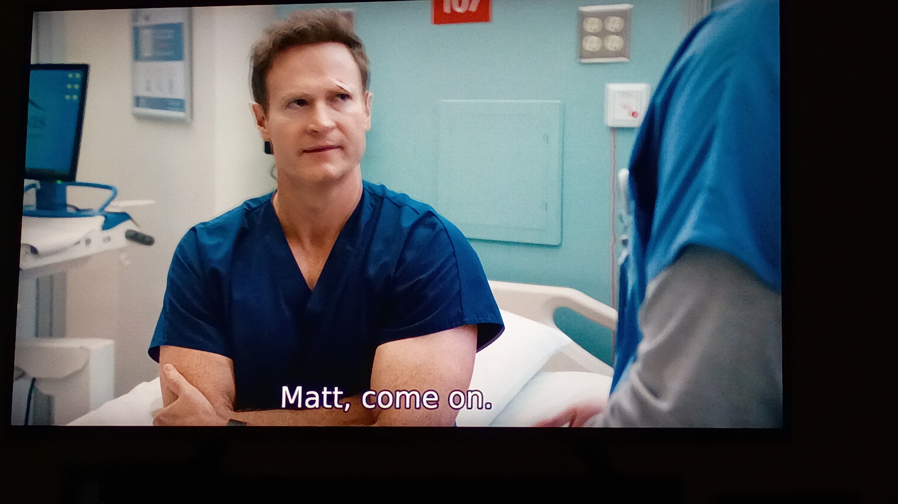
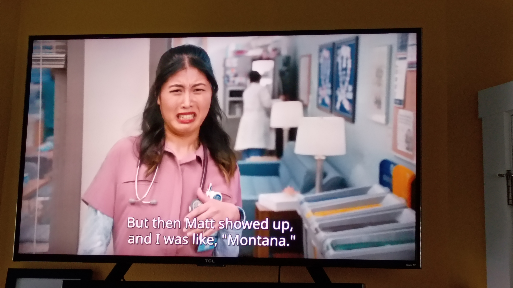
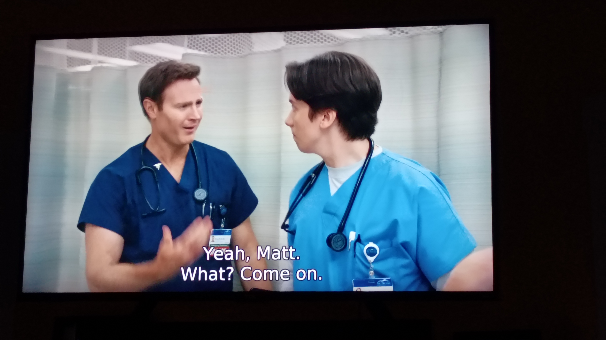
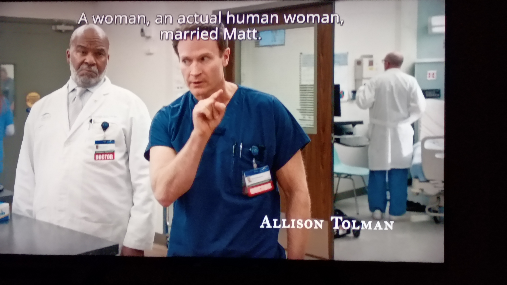

It's been nearly a quarter century since i owned the bakiwop.com domain. Tonight? Tonight I couldn't fall asleep so I went downstairs, fired up the pc, and, for some reason, checked to see if it was available (I'd checked on and off over the years to no avail) . . . and there it was, just waiting for me, looking all pretty and shiny on the domain registrar shelf. How cool is that?

Some housekeeping.
Hosting. I have two sites hosted on GitHub Pages - baki.cc and bryanbyun.org, so that was the obvious choice for this one, but, I wanted to see what the cool kids were using these days. Turns out it's Cloudfare.
Oh yeah. Did I mention I was only looking for free hosting?
I used to use Dreamhost all the time. Still like it, but free is extra neat.
So . . . Cloudfare. There's Cloudfare Pages which is completely free. Nifty. I set it up but discovered that every time I would update the site I'd have to delete the old site then re-upload the entire site - it's like Star Trek transporters, the original is completely destroyed and replaced with a copy. That's fine for simple sites that aren't updated often (to be fair, Cloudfare Pages tell you that's what they're for up front) but it just seemed uncool, yo. So uncool.
So I considered doing a third site on GitHub Pages, but then I thought, what if I wanted to do some non- HTML/CSS type stuff . . . a little PHP here, a dash of SQL there . . . and I remembered Nuzzle House (love that groovy 90s look) uses Nearly Free Speech and has been happy with it. Buuuuuuut . . . even 1 cent a day isn't free and then I found this article on how to use Cloudfare R2 - some kind of bucket thing? I don't know, yo, all these buckets and instances and dockers . . . my aching brain! - to set up a free site and not have to Star Trek transporter the files each time I updated it . . . buuuuuuut I had to give them a credit card and it's possible I might have to eventually pay, sooooo . . .
GitHub Pages it was. There's no server-side stuff available, but I know how to use it and my site is hecka simple.
~
Comments. I thought of trying to add comments to the site. Never had them (except for when I used WordPress back in the day). Disqus is a hot mess of ads and privacy issues. Blech. But it is ubiquitous. And free. Found RemarkBox to maybe kinda be a possibility . . . perhaps? Or GraphComment? It seems like a big headache for something that will get minuscule use, and, if someone really wants to reach out, they can do it via email or text.
~
Accessibility. Looking into making the site pretty gosh darned accessible. Looks like W3C's Web Content Accessibility Guidelines (WCAG) is the place to be for that. Gonna have to start learning how to use main, header, and footer tags, and proper title tags. And aria-labels? So much to learn.
~
Old stuff. I'll probably bring over some of the stuff from baki.cc - archive and stories eventually. Or maybe not?
~
All in all it feels good to be back in the bakiwop.com digs. I actually kinda like the baki.cc domain name a bit more - seems new and fresh and "with it" and "hip" - but bakiwop.com was where it all started . . . well . . . mostly started . . . I did have school tilde server space back in the mid-90s, one of those .edu tilde sites, but bakiwop.com was my first domain name and it's nice to have it back after a quarter of a century or so.
~
Also? I seem to be using an absurd amount of ellipses in this post . . . what the gosh darn heck?
They found me. I don't know how they found me, but found me they did.
Shit.
And I mean that literally.
I don't know why they're so mad at me, the little fuckers. It wasn't my fault . . . and no one got hurt . . . not really. They wear full-body camouflage year round. I mean, they're literally designed to not be seen. So in the early morning when the light's all funny and they're waddling up the side of a curvy, narrow road?
They're lucky I saw them at all.
So . . .
I went out to drag the trash bins to the curb for pickup around 11 o'clock last night. Something I do every week. But this time, when I opened the front door, I noticed the poo lying there in the driveway.
Those damned ducks.
Those little fuckers.
Look, so maybe I was driving a little too fast that morning. Maybe I was a little late for work. But you're wearing camouflage, for christ's sake! Anyway, I saw you in time. I saw you waddling your little butts quickly toward the side of the road.
It's not like I aimed for you. Or sped up to scare you.
You ungrateful little . . .
And just what were you doing in the middle of the road in the first place, my dear ducks? Huh?
I saw you and another adult and a bunch of littles waddling for all you were worth to the side of the road. Then I passed you.
I know I got a little close, but I slowed down and swerved, and, when I passed you by? I saw you looking back at me over whatever the duck's version of a shoulder is.
Eye contact.
I didn't know you were marking me for vengeful defecation.
But when I opened that front door last night and saw the poo? Yeah. I knew who'd done it. I knew when you eyeballed me on that curvy hill that you'd come seeking your anatic revenge.
It's my fault, really. I should have changed up my route to work for a week or two. I got complacent. Didn't even think that you'd be looking for me. Just what could a duck do, I thought to myself, revenge-wise, right?
Homo Sapiens smugness.
I should have realized when you pegged me with those wee beady eyes that you'd come gunning for me. Was it because of the ducklings? Were you in full protection mode and you'll brook no guff from a driving monkey?
Or are you just an asshole?
Anyway, the rain took care of the poo overnight, but are you satisfied, my dear duckling? Is your thirst for vengeance sated? Because I'll give you this one incident this one time. We all get scared and make mistakes. But let me warn you. If it's not over? If you come at me again? You'd better be prepared to go the mattresses, my winged friend.
My advice to you? Don't start nuthin, won't be nuthin.
Our neighbor is moving.
She moved in about six months ago. We saw a lot of her for five of those months, but this past month? Not so much.
Until today.
She caught us while we were out working in the yard after work. Told us to expect some more people working on her house the next couple weeks. Sorry about all the noise. Then she looked at our garage door.
"Hey," she said. "There's no rust on your garage door. How'd you do that?"
"Keep the rust off?" I asked. She nodded. We'd seen the workers sandblasting then painting her garage door earlier.
I looked over at my wife who said, "We wash it."
The neighbor turned to me.
"We wash it," I said, "along with the rest of the house every month or two."
"But who do you get to do it?" asked the neighbor.
"We do it," we said together.
"We don't hire people," said the wife.
"We're the poor side of the street," I said.
The neighbor giggled and looked back at her house, "The market's a little tight right now, but I'm hoping to get what I paid for it."
"Well, the work you're doing should help," my wife said.
The neighbor looked back at our yard. "Your grass is so green. How much were the automatic sprinklers?"
My wife responded, "We don't have sprinklers."
The neighbor looked at me.
"We water it."
"With a hose."
"Poor side of the street," I finished.
"You know how you're going to sell your house for low seven figures?" I asked. "One or two point something million dollars? Our side of the street is only to the right of that decimal point. We're point something."
The neighbor giggled again then talked about deciding which house she was going to move to, the one in Carmel or the one in San Francisco, then said, "I need deck work. Who does yours?"
We looked at each other. My wife raised her hand. "I do. I'll be doing ours in a week or so depending on the weather."
The neighbor giggled yet again. "And your mulch?"
We gave her a look.
She laughed.
Every morning on the drive to work there's a crow that sits in the middle of the road pecking at . . . nothing? I mean, I don't have the visual acuity of a bird and all, but it's been raining pretty good the last week and I don't see anything there for the bird to be pecking at.
It's in the morning, and I see other crows pecking at the grass/dirt/road/whatever, so maybe this crow drew the short straw when getting morning pecking turf? Maybe the other birds just kinda got together and told this bird, "Hey Colin," (because of course he's named Colin) "I bet there's some good pecking to be done over there." And then they all snicker.
Do crows snicker? It seems like they would.
Or maybe there was a real good road kill there, like, a month ago and the crow keeps coming back to the same spot where the amazing roadkill was to savor that one beautiful moment of a meal? "Mmmmm . . . yeah . . . that was some good stuff," *peck peck peck* "real good." *smack gums beak.*
Whatever it is, crow dude, you gotta stop pecking away like a mad crow at that empty piece of tarmac. One of these days your gonna be too slow getting out of the way of traffic and then, Colin or not, your fellow Corvus will seek swift justice for the smooshing of one of their own.
There's an article on Gen X from the NY Times from December of last year. Read the article here, if you like, though I didn't read the whole thing because it's so long and . . . well . . . like . . . you know . . .
whatever.
And. And! A couple of paragraphs into the article by Amanda Fortini there's a quote that reads,
Douglas Coupland, the author of the 1991 novel “Generation X: Tales for an Accelerated Culture,” which gave the cohort its name, was born in 1961. The title, he’s said, was inspired by the cultural historian Paul Fussell’s “Class: A Guide Through the American Status System” (1983), in which Fussell designates an “X” category of people who, as Coupland once put it, “wanted to hop off the merry-go-round of status, money and social climbing that so often frames modern existence”
I know . . . I know. It's a long quote from a guy who coined the term Generation X which was based on the work of another guy . . . blah blah blah.
The point is this: the article itself talks about why that generation is called Generation X, how the entire generation is defined by not caring much about riches or fame, and then the article, via quotes, pictures, and videos, talks only about rich and famous Gen Xers.
Posers.
Little ride on the coast last night after all the tourists left. A little rain. A little wind. Depoe Bay was kicking up a fuss. Cape Foulweather couldn't decide what kind of mood it was in.

It's simply lovely going home for lunch every day.
I live a couple minutes away, so it's a quick little trip. Quick little trips are lovely.
On that quick little trip I drive through a PNW forest down and down and down to the beach and then follow the bluff that runs along the Pacific Ocean up and up and up to my house. Seeing the Pacific Ocean and the headlands jutting out into it every day in all kinds of weather? Lovely.
Once I'm home I get to hang out with my wife. Always lovely.
There aren't too many wild flower areas around that are open space/meadow-like and protected from the wind coming off the Pacific, but because we made our yard one of those places my entertainment while I'm eating is bees, dragonflies, and hummingbirds dancing about. Lovely.
According to the television show St. Denis Medical, people named Matt are . . . special.









Ran bakiwop.com through WebAIM's accessibility tool and here were the results: https://wave.webaim.org/report#/bakiwop.com.
Things to work on:
- Turns out that alternate text should be "succinct and descriptive" not a horribly long flowery prose kinda thing to describe every aspect of the image.
- No page regions. I didn't even know what page regions (aka accessibility landmarks) were. This is what they are: https://www.w3schools.com/accessibility/accessibility_landmarks.php.
- This only showed up when I ran the tool on my phone: don't justify paragraph text. They say, "Large blocks of justified text can negatively impact readability due to varying word/letter pacing and 'rivers of white' that flow through the text."
- Empty (null) alt text. "an image does not convey content or if the content of the image is conveyed elsewhere (such as in a caption or nearby text), the image should have empty/null alternative text (alt="") to ensure that it is ignored by a screen reader and is hidden when images are disabled or unavailable."
- There's no heading structure. They say, "Headings (<h1>-<h6>) provide important document structure, outlines, and navigation functionality to assistive technology users."
This is only one of the many web accessibility tools available to test sites with, but it's a place to start. I have a lot to learn. I have some work to do.
But now? Right now? I have to go move half a dozen yards of mulch around the property.
The super-rich ‘preppers’ planning to save themselves from the apocalypse (The Guardian, 2022. Douglas Rushkoff. Archive.org capture.)
Finally, the CEO of a brokerage house explained that he had nearly completed building his own underground bunker system, and asked: “How do I maintain authority over my security force after the event?” The event. That was their euphemism for the environmental collapse, social unrest, nuclear explosion, solar storm, unstoppable virus, or malicious computer hack that takes everything down.
The billionaires considered using special combination locks on the food supply that only they knew. Or making guards wear disciplinary collars of some kind in return for their survival. Or maybe building robots to serve as guards and workers – if that technology could be developed “in time”.
The billionaires who called me out to the desert to evaluate their bunker strategies are not the victors of the economic game so much as the victims of its perversely limited rules. More than anything, they have succumbed to a mindset where “winning” means earning enough money to insulate themselves from the damage they are creating by earning money in that way.
~
What If We Stopped Voting Like Hostages? (The American Pamphleteer, 2026. Lady Libertie.)
They tell us voting our conscience is throwing our vote away. But voting for the same broken bargain over and over is how we got here.
When the only argument for a candidate is that someone worse might win, we are no longer building representation. We are managing damage. And damage control is not the same thing as democracy.
Because democracy does not become representative by accident. It becomes representative when the people insist on being represented.
~
Unhumans: The Secret History of Communist Revolutions (and How to Crush Them (2024. Jack Posobiec, Joshua Lisec. At a library near you.)
The core thesis of the book is that the American left intends to terrorize and subjugate the United States under a communist dictatorship.[2] In their telling, these people are "unhumans",[3] too twisted and malicious to be allowed the status of human beings or accorded human rights.
For the last couple centuries, we’ve known them as communists. Socialists, with extra steps. And of course, leftists. Radicals and revolutionaries as well. A hundred years ago, Marxist Leninists, then more recently, Cultural Marxists. Even as, without irony and not as a joke, "progressives". For the purposes of this book, we will call them the unhumans.
~
It can be understood as a reaction against values and ideologies associated with Enlightenment, advocating for a return to traditional societal constructs and forms of government, such as absolute monarchism and cameralism.
Curtis Yarvin began constructing the basis of the ideology in the late 2000s, drawing upon libertarianism and Austrian economics along with thinkers such as Hans-Hermann Hoppe and Thomas Carlyle. Nick Land elaborated upon Yarvin's ideas and coined the term "Dark Enlightenment." Despite criticism, the movement has gained traction with parts of Silicon Valley, as well as with several political figures associated with United States President Donald Trump, including political strategist Steve Bannon, Vice President JD Vance, and Michael Anton.
~
The project's policy document Mandate for Leadership calls for the replacement of federal civil service workers by people loyal to "the next conservative president" and for taking partisan control of the Department of Justice (DOJ), the Federal Bureau of Investigation (FBI), the Department of Commerce (DOC), and the Federal Trade Commission (FTC). Other agencies, including the Department of Homeland Security (DHS) and the Department of Education (ED), would be dismantled. It calls for reducing environmental regulations and realigning the National Institutes of Health (NIH) with conservative priorities. The blueprint seeks to reduce taxes on corporations, institute a flat income tax on individuals, cut Medicare and Medicaid, and reverse as many of President Joe Biden's policies as possible. It proposes banning pornography, removing legal protections against anti-LGBT discrimination, and ending diversity, equity, and inclusion (DEI) programs while having the DOJ prosecute anti-white racism. The project recommends mass deportation of illegal immigrants. The plan also proposes enacting laws supported by the Christian right, such as criminalizing the sending and receiving of abortion and birth control medications and eliminating coverage of emergency contraception.
caveat lector